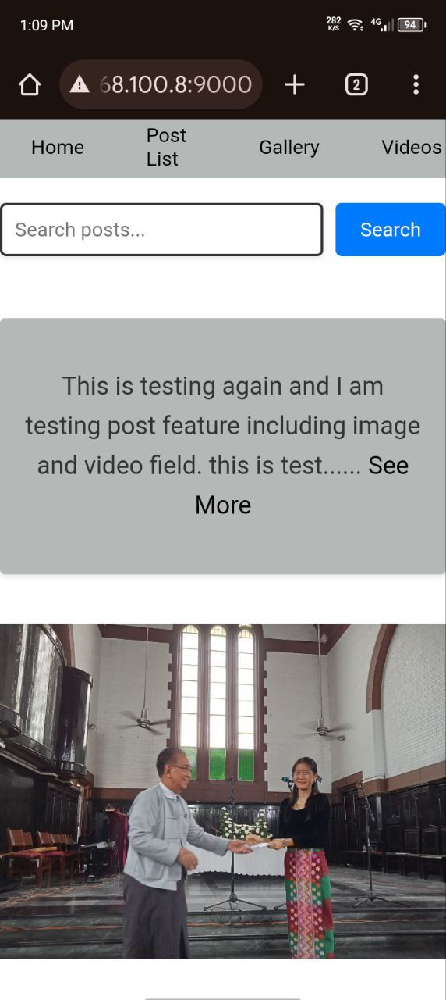
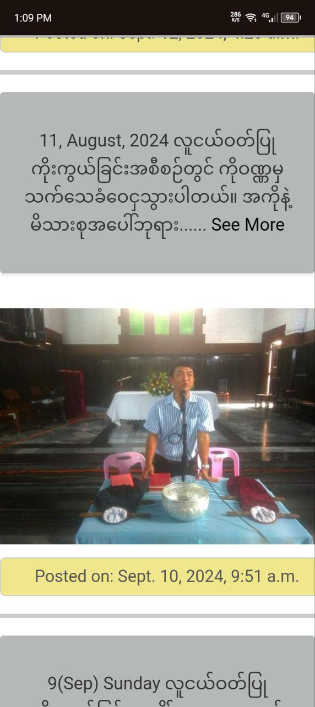
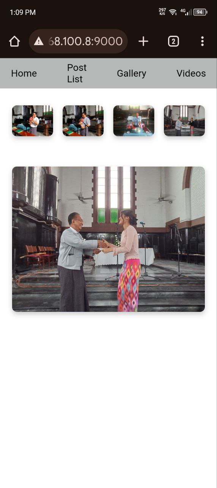
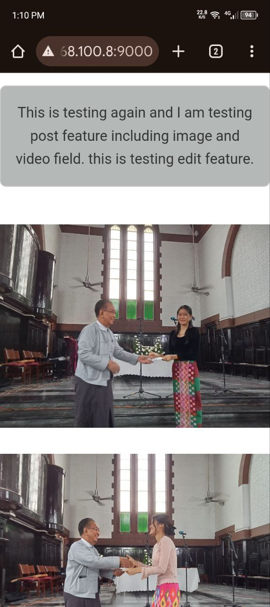
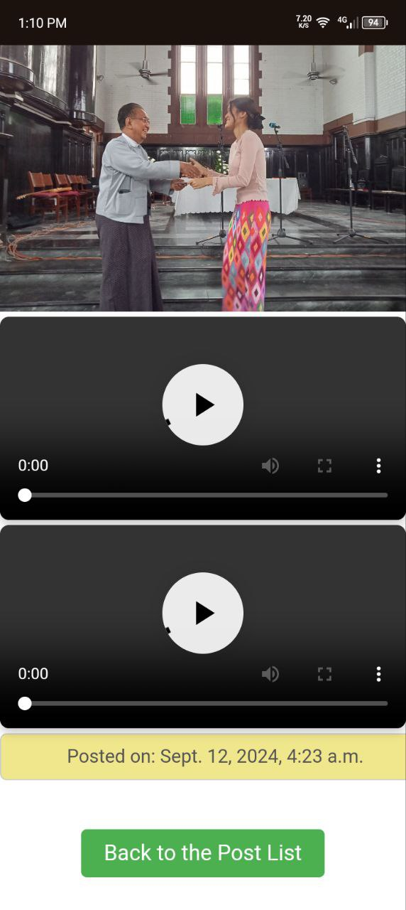

Django website
Welcome to my fully functional blog website,
built using the Django web framework. This
platform provides an intuitive user interface,
allowing visitors to easily navigate through
various blog posts. Key features include a
robust search bar that enables users to
find content quickly and effortlessly.
With a clean design and responsive layout,
the site offers a seamless browsing experience
across all devices, making it the perfect space
for readers to explore insightful articles and engage with the content.





Key Features:
- Search and Navigation Bar: Easily find content with a user-friendly search bar
and intuitive navigation menu, ensuring a seamless browsing experience.
- Content Highlighting: Important content is highlighted for quick access,
allowing visitors to focus on the most relevant posts and updates.
- Gallery and Videos Page: A dedicated section for galleries and videos,
making it easier to search for and explore specific posts and multimedia content.
- Mobile-Friendly Design: Fully responsive layout optimized for mobile devices,
providing a consistent and enjoyable experience across all screen sizes.
- User-Friendly Interface: Designed with usability in mind, ensuring that all
visitors can easily navigate and interact with the content.
Technologies Used:
- HTML: The foundational markup language for structuring web content.
- CSS: Used for styling and layout, enhancing the visual presentation of the website.
- Python (Django Framework): The back-end framework used to build a robust and scalable web application.
See More Projects